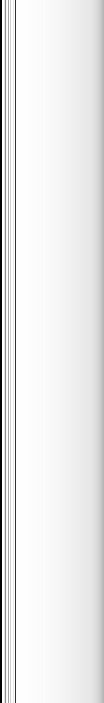

chapt.00
Pixel to Paper
Ricki, Goldman-Segall. 1993. Deconstructing the Humpty Dumpty Myth.
Pixel to Paper: Between Physical and Digital Spaces.
Art; Space; Reality; Shape; Environment; Digital; Physical; Dialog; Hybrid; Process
Sumário: Este Projeto ambiciona diluir as fronteiras entre o espaço físico e digital. Explora as características de livros materiais traduzindo-as no meio digital. Procura, também, decompor o objeto físico e adotar alternativas à leitura habitual, pela introdução do elemento impresso no meio computacional. Por conseguinte, explora soluções híbridas ao livro convencional, possibilitando um diálogo fluido entre ambas as formas existentes do mesmo objeto.
[01] Olson. Marisa. 2015.Golden Oldies. Performance.
[02] Nasty Nets. 2007. The Great nternet Sleepover.
[03] DIS's. 2012. online project "Competing Images".
[04] DIS's. 2012. online project "Competing Images".
[05] Eva Belerhemer, Miriam Laussegger. 2010. Ubersetzung ist eine Form.
[06] Ed Fornieles. 2014. Installation.
chapt.00
Pixel to Paper
Quantara, Domenoco. 2015. Situating Post Internet.
[07] Olia Lialina. 2018.“Self Portrait”. Screenshot.
[08] Hito steyerl. 2013. How Not to Be Seen: A Fucking Didactic Educational. MOV File.
[09] Joshua Citarella. 2013. Compression Artifacts.
[10] Joshua Citarella. 2013. Compression Artifacts.
chapt.00
Pixel to Paper
[11] Christoph Sensen.CAVE man, 3-D virtual patient projected onto a holodeck.
[12] DIS's. 2012. online project "Competing Images".
[13] Marisa Olson. 2006. Abe & Mo Sing the Blog.
[14] Olia Lialina. 1996. My Boyfriend Came Back from the War. Photo: Franz Wamhof.
[15] Marisa Olson. 2013. Summer.
[...]
Propósito: Explorar a diluição de fronteiras entre o espaço físico e digital numa perspetiva que ambicione entender o potencial narrativo e envolvente de ambos os ambientes.
Objetivos & Metodologias:
Antevisão de Resultados: Procurar incorporar a dualidade entre o contexto híbrido, formalmente mimetizando o objeto final de Projeto I.
Ludovico, Alessandro. 2014. Post Digital Publishing, Hybrid and Processual Objects in Print.
chapt.00
Pixel to Paper